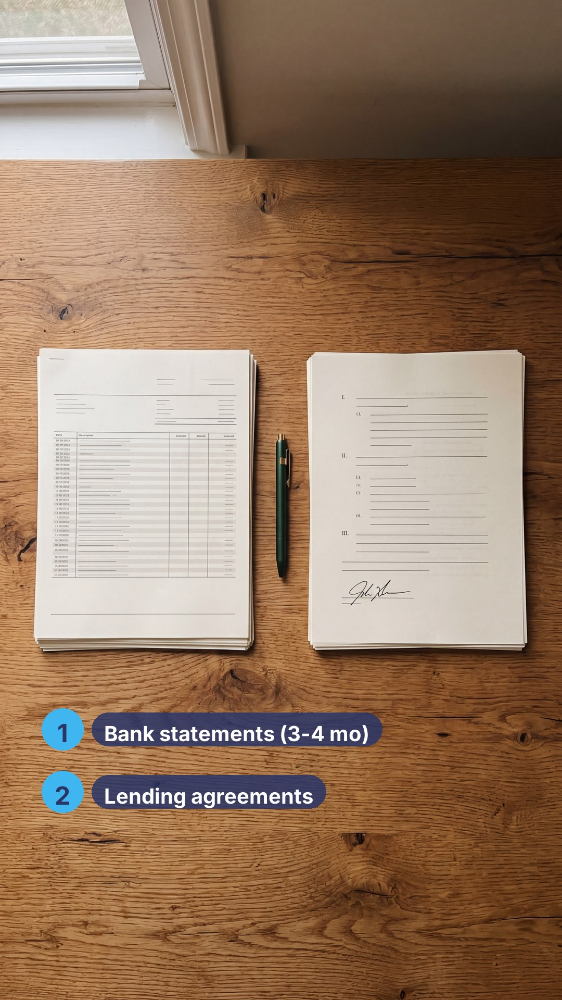
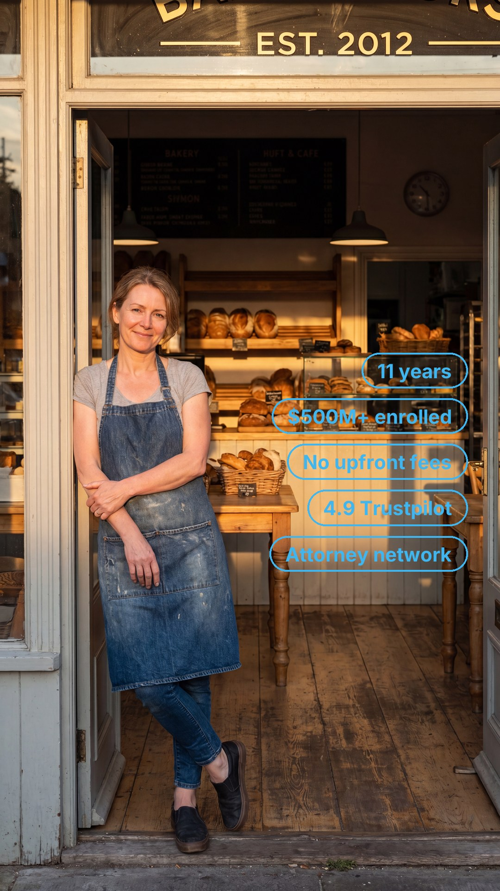
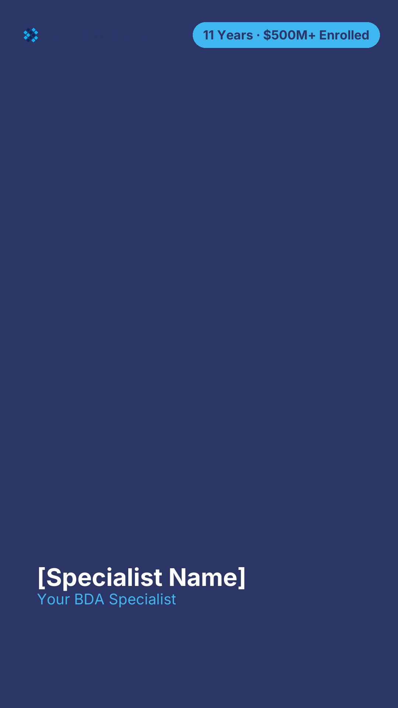
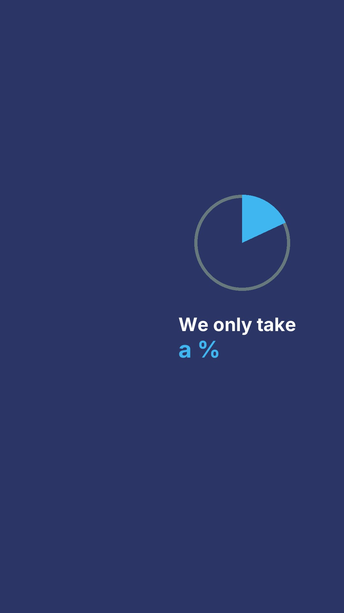
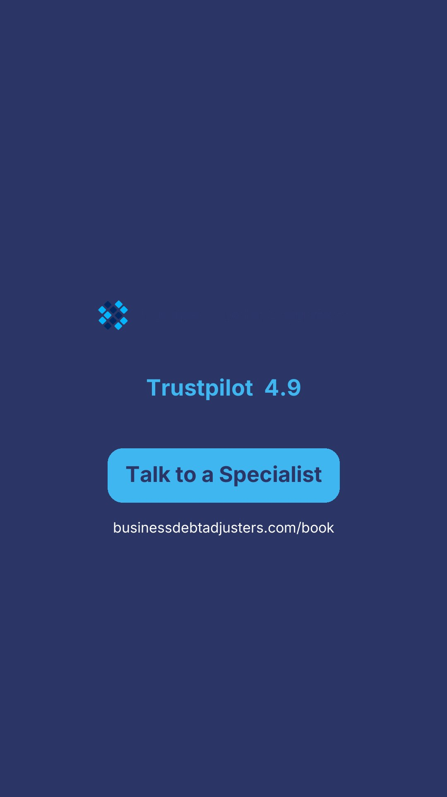

Base assets for review · 4K 9:16 · BDA brand (navy/cyan + real logo) · all text overlaid (none AI-rendered)
This is the full ~4-minute master. Real B-roll motion across all eight frames — open → gather two documents → why your bank statements prove the hardship → how to find your agreements → the 11-year financial workup → why we don't take everyone → why BDA → close. Karaoke word-highlight captions on every line. Film grain + warm grade + micro-handheld so it reads filmed, not rendered. Every on-screen graphic composited (none AI-rendered) in BDA navy/cyan with the real logo. Eric VO. Closes on the logo + 4.9 + CTA card.
v3 — 15s format proof (captions + grade), the treatment this full cut is built on:
v2 — motion, no captions/grade:
v1 — spokesperson inlay (lip-sync issue):


Chips will get a navy backing in the final pass for crisper legibility on bright shots.
These frames have no B-roll yet — shown as overlay-on-navy so you can see the text/graphics. Generated only if you choose Path A.



Same opening line, 3 BDA-roster ElevenLabs voices. Pick one and I'll record the full 8-frame VO.